The Bojin Journal
Browse by concern.
Not sure what to search? Just tap the part of your face that bothers you most. Every guide is a short read with a gentle 5-minute ritual you can try tonight.

Jowls forming along your jawline?
Not a double chin, not just weight. Picture the jaw's soft tissue as a hammock losing its anchor points, and what a gentle release reaches.
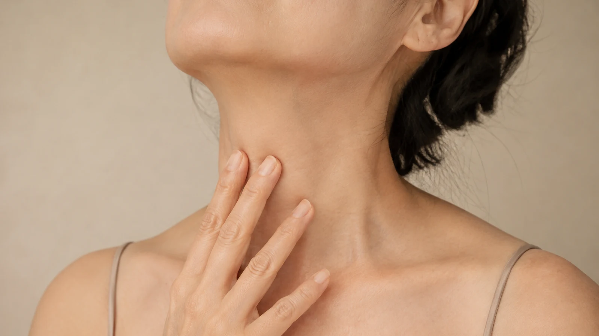
Those horizontal "necklace" lines on your neck?
The rings around your neck are fold lines, not sun damage. Think of them like an accordion pleat set by years of looking down.

Crepey skin on your neck and under your eyes?
It's a texture, not a line. Think paper versus fabric, and what hydration and circulation can honestly soften.
Complexion looking sallow, grey, or washed out?
Often not a product problem. Think of your circulation as a dimmer switch turned down, and a gentle way to turn it back up.
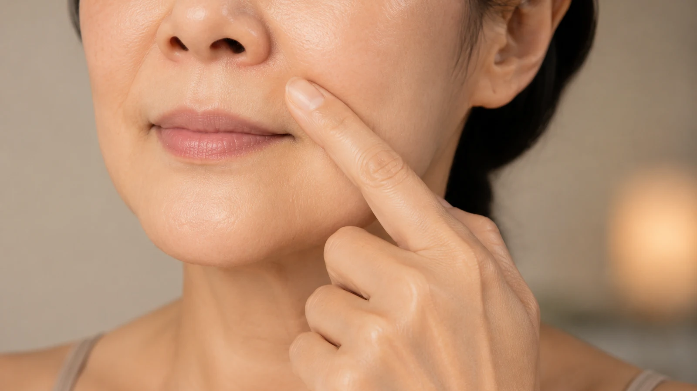
Are nasolabial folds permanent?
The fold is really two things: a hinge you can soften and a pillow you can't refill by hand. Knowing which is which changes what you try.
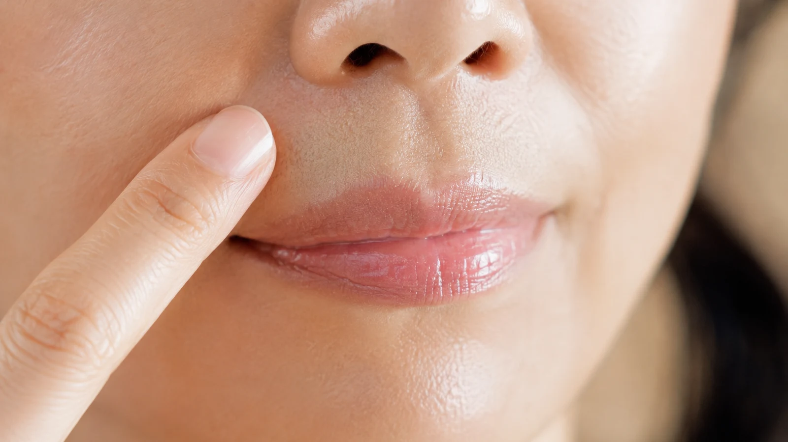
Vertical lip lines, and lipstick that feathers?
Those little lines above your lip come from a purse-string muscle you tighten all day. Here's how to loosen the drawstring.
Which oil or cream should you use?
You don't need a special product, but the right slip matters. A simple way to choose by your skin type and the season.
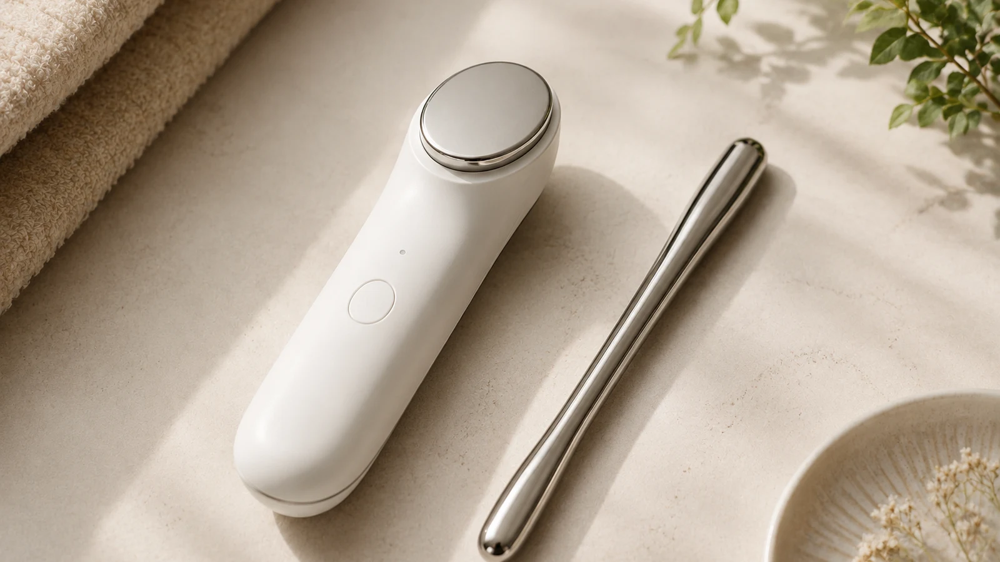
Bojin vs. microcurrent devices: which is worth it?
One sends a signal to the muscle, the other releases tension by hand. Different engines, not a contest. Here's which fits when.
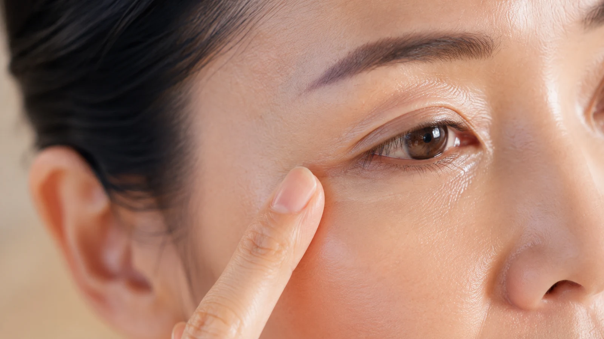
Hollow, sunken under-eyes that sleep won't fix?
A tear trough isn't a bag or a dark circle. The shadow is three layers, and two of the three answer to a gentle release.
A wedding or reunion coming up?
Don't cram the night before. A gentle week-by-week countdown builds a rested, awake look you can actually count on.
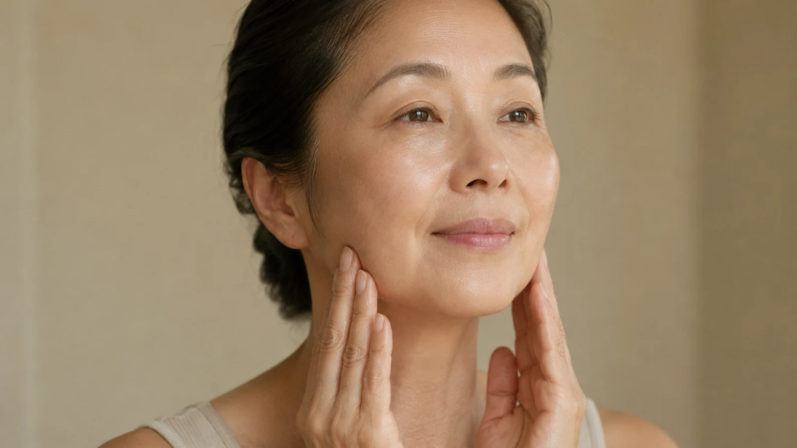
Bojin vs. face yoga: which one fits what your face needs?
One builds muscle, the other releases tension. A single honest question sorts out which job your face is asking for tonight.
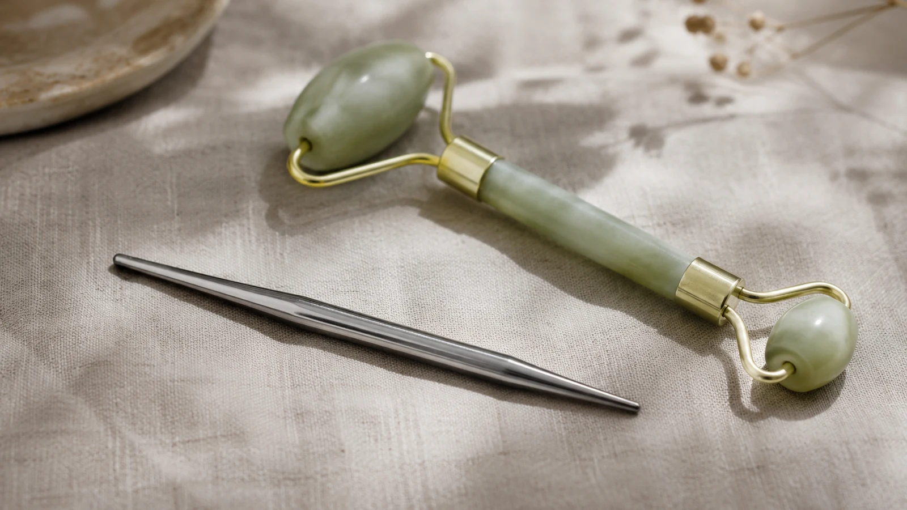
Bojin vs. the jade roller in your drawer
A roller glides past tension; bojin stays on it at a held angle until it eases. When each one earns its two minutes.
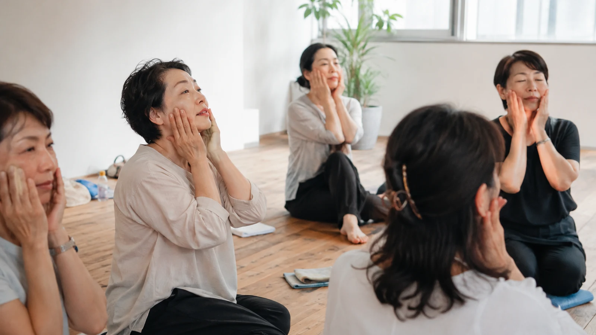
How long until you actually see a difference?
No overnight miracle, and no six-month wait either. The honest week-by-week timeline, checkpoint by checkpoint.
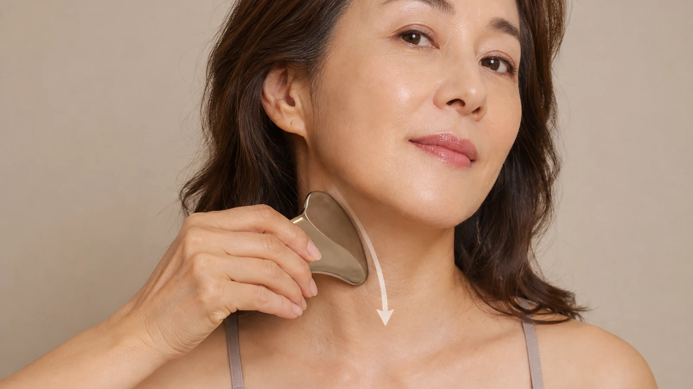
Loose skin and lines along your neck?
The "turkey neck" look is three pulls stacked together: posture, held tension, pooled fluid. Two of the three respond to a gentle release.
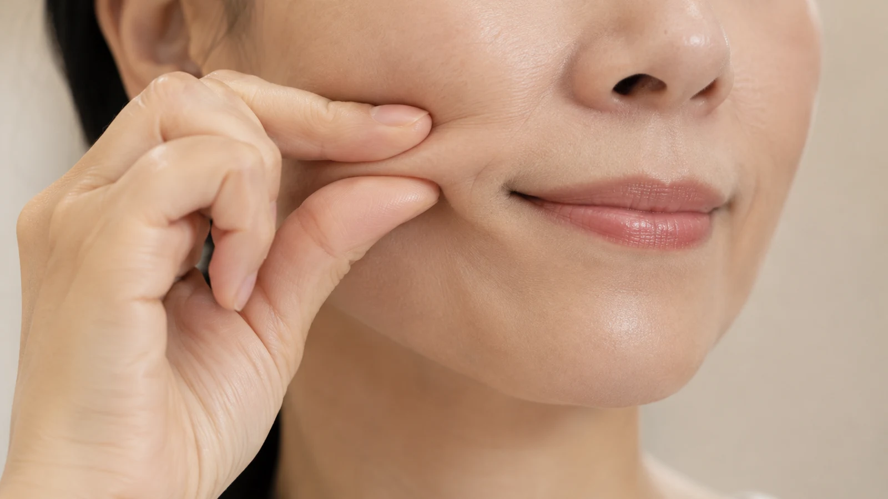
Mouth corners turning down? What's really happening
A resting frown that isn't a frown. Two pulls draw the corners down, and the muscle-habit one is yours to unlearn.
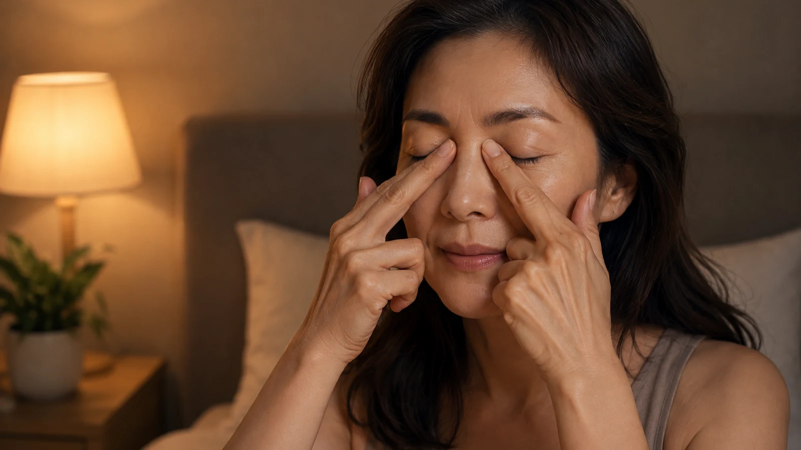
What should your evening face ritual actually undo?
The morning ritual preps your face for the day. The evening one should undo the day: screen squint, a held jaw, pressed temples.
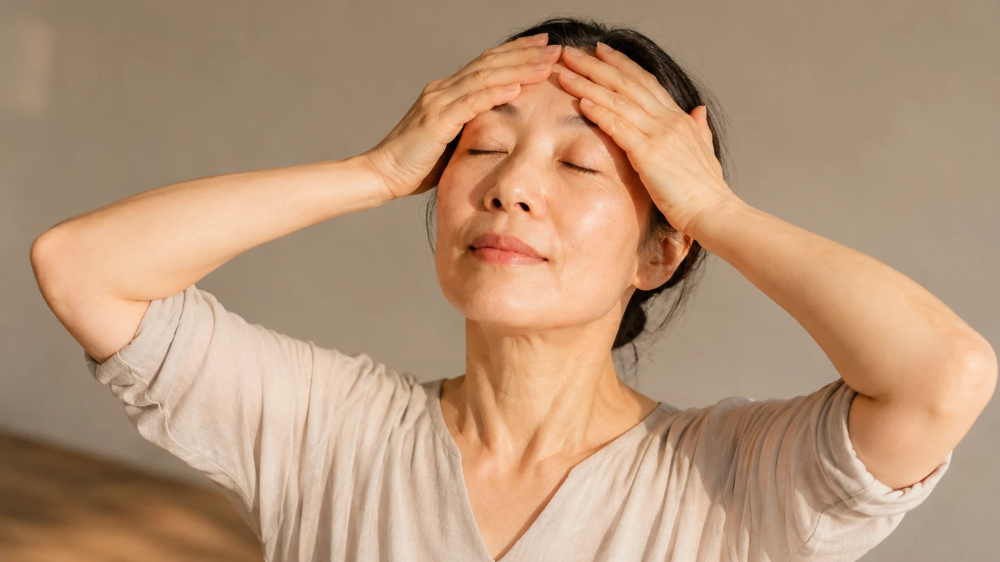
Why your whole face feels different in perimenopause
Thinner skin, slower circulation, drier texture, shifting puffiness: four changes arriving together. An honest map, and a gentler routine built for it.

Where does bojin fit with retinol and other actives?
No fixed rule decides the order. Your skin barrier's state tonight decides, and the check takes fifteen seconds.
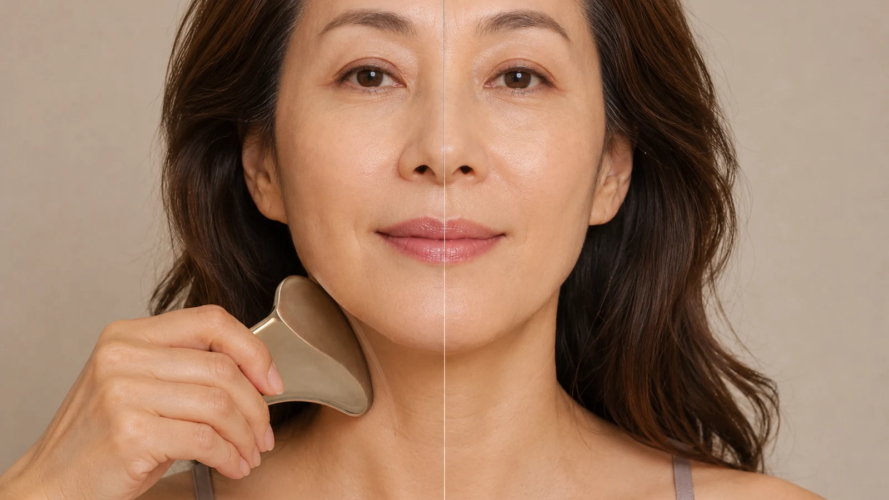
Why one side of your face looks different from the other
Every face is a little uneven; that part is normal. The extra tension traces to four one-sided habits you can name.

Sharing this with someone you love
A mother and daughter, two sisters, a friend group: the habit keeps better with two. How to teach it, and the one rule that changes.

What can bojin actually do for your face?
No miracle promises here. The honest list of what a gentle method can and cannot change, so you start with expectations that survive week three.

Who should skip bojin for now?
Blood thinners, a rosacea flare, recent injectables, broken skin. Every "wait" on the list, explained plainly and kindly.

How often should you actually do bojin?
Two to three gentle sessions a week, and the rest days are part of the plan. Why daily isn't better, and how to read your own skin.

Steel stick, or the jade stone you own?
Different jobs, not a contest. Why the method uses stainless steel, and why you can still start tonight with the stone in your drawer.

Dry, or with oil? One rule protects mature skin
The tool always needs something to glide on. The one-rule answer, how much to use, and the slip test that keeps every stroke kind.

Redness, soreness, or a warning sign?
Light pink that fades fast is normal. A bruise is a stop sign. A calm decoder for the moment you wonder if that's supposed to happen.

Nervous to start? Your first five minutes
A tiny, safe first session: one cheek, the stone you already own, and a built-in stop rule so nothing can go wrong.

Is bojin just gua sha with a new name?
A fair suspicion, answered straight: gua sha is a tool, bojin is a method. What that difference means before you spend anything.
Can bojin make your face saggier?
The honest answer, and why careless dragging is the real risk. The safe pressure and five rules that keep skin supported, never stretched.

Does facial gua sha actually work?
Straight talk for skeptics. Limits first, benefits second, and nothing in between dressed up as a miracle. Judge it by your own mirror.

Had Botox or filler? What to wait for
Injectables and at-home care can coexist, with timing and a gentle touch. Why your injector's timeline always leads.

Dark circles that won't fade even after a full night's sleep?
Sleep was never the only cause — thin skin, a little shadow and pooled fluid all play a part. Here's what a careful few minutes can and can't do.
Under-eye bags after 50?
Some of it is fluid that pooled overnight, some is how the area changes with age. A gentle daily reset can ease the puffy part.

Crow's feet at the corners of your eyes?
Years of smiling and squinting, plus thinner skin after 40. It won't erase the lines, but it can soften the tension that deepens them.

Heavy, hooded eyelids making you look tired?
Brow tension and fluid can leave lids feeling heavy. A gentle brow-and-eye reset can help the area look a little more open and awake.

Screen-tired eyes by mid-afternoon?
Long hours on a screen leave the eyes tight and tired-looking. Here's a 2-minute reset you can do right at your desk, no mirror needed.
Menopause and tired-looking eyes?
Thinner, drier skin and broken sleep show first around the eyes. A calm morning reset can help them look brighter and more rested.

Is your eye cream just sitting on top?
Often it's the application, not the formula. A 30-second warm-and-press method helps your cream sink in instead of pooling.

Forehead lines getting deeper?
A lifetime of raising the brows, plus thinner skin. It won't erase lines, but relaxing the tension can help the area look smoother and rested.
Heavy, low brows making your eyes look smaller?
Brows sit lower with age and tension. Releasing the forehead and brow can help the area feel lighter and look a little more lifted.

A tense forehead you only notice at the end of the day?
We hold stress and screen-focus in the forehead without noticing. A calming evening release helps it unwind.
“Natural alternatives to Botox” for your forehead?
An honest look: bojin isn't Botox and won't do what a needle does. Here's what a gentle daily habit genuinely can — and can't — do.

Why frown lines can deepen faster around menopause
Thinner skin plus more stress-holding can make the ‘11’ lines look deeper. Gentle release helps the area soften and look rested — honestly, not a fix.
Tired, puffy eyes every morning?
After 40, thinner skin and slower overnight drainage let fluid pool around the eyes — so you wake up looking puffy and tired even after a full night's sleep.

A softer jawline and a little double chin?
A softer jawline usually isn't just weight. Pooled fluid, a quietly clenched jaw and tech-neck posture all pull the lower face down.
A 2-minute jaw reset before your next video call?
Camera angles are unkind to a soft jawline and a tense neck. A quick desk-side reset before you log on can help.

Why does your jaw feel tight by the end of the day?
Calls, chewing, unconscious clenching and hours looking down at a screen set into the jaw by evening. A calming 3-minute wind-down can help.

Smile lines settling in, cheeks a little lower?
As the support under your mid-face loosens, cheeks sit a little lower and smile lines deepen — the gentle downward pull that quietly reads as "older."
A 3-minute cheek reset before you put on makeup?
Puffy or tense cheeks can make foundation settle into your smile lines by midday. Here's a gentle pre-makeup routine to help it glide on smoother.
Puffy cheeks and deeper smile lines after a flight?
Cabin pressure, salt and hours of stillness pool fluid in the mid-face. A gentle post-landing reset can help you look like yourself again.

Frown lines and a heavy, tense brow?
Those vertical "11" lines come from brow muscles frowning all day — squinting at screens, and holding stress in your forehead without noticing.

Dull, puffy, tired-looking skin?
After 40, circulation and fluid movement slow down, so skin looks flat and puffy and your serums seem to just sit on top instead of sinking in.

Does gua sha really work — or is it the technique?
If your gua sha stone hasn't delivered the glow you hoped for, it's probably not the stone. The tool matters far less than the technique behind it.
Is bojin safe, and when should you skip it?
Done gently, it suits most healthy adults. Here's the honest safety guide: when to wait, when to check with a professional, and how to keep every session kind.
How hard should you actually press?
Too heavy bruises and does no good; too light never reaches the tension. Here's the honest answer, and a simple way to find your own comfortable pressure.
The two ends of your bojin stick?
The broad edge and the rounded tip do two different jobs. Which end to use where, how to hold each, and why the tip needs less pressure, not more.
The angle of the tool: why a few degrees changes everything
Pressure gets all the questions; angle decides which layer you actually reach. Flat, tilted, or upright, and what each one does.
What you feel under the tool, and what each sensation means
A dull ache, a warm flush, a sharp sting: your face is telling you something. How to read it and adjust in the moment.

Fingers, a gua sha stone, or a bojin stick?
You don't need to buy a thing to start. Here's what your fingertips, a stone you already own, and a proper bojin stick each do best.

What should a simple morning face ritual look like?
You don't need an hour or a shelf of products. A few gentle minutes each morning, done in the right order, do most of the work.
Gua sha not giving you results?
You bought the stone and watched the videos, and your skin looks about the same. You're not doing it wrong — what's usually missing is the method.

Do you really need expensive facials?
Facials feel lovely, but they aren't the only way to keep skin bright and lifted. Here's what a few minutes of home care can really do.

Are you holding your breath?
Concentrating on technique makes many women quietly hold their breath. Why that tenses the very area you're trying to release, and how to breathe instead.

Building a bojin habit
The trick that actually works isn't willpower. It's where you keep the stick and what you attach the habit to.

Do both sides of your face need equal time?
Most faces aren't perfectly symmetrical to begin with. What that means for how long you spend on each side.

Does your posture matter while you work?
Hunching over a mirror to see better can quietly undo the neck work you're doing. The sitting position that keeps a session from fighting itself.
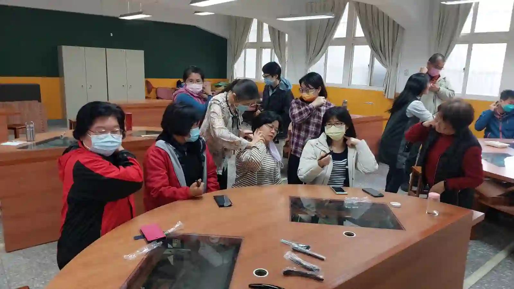
Sore hands or a weak grip?
Arthritis or less grip strength doesn't have to end your routine. How to hold the tool differently, and when to use your fingers instead.
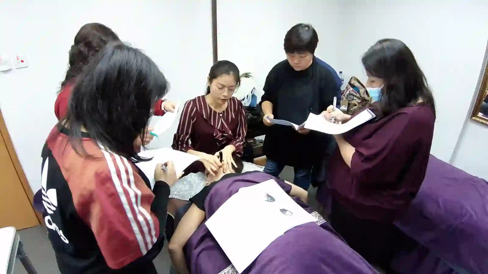
Stuffed up? Sinus congestion and that heavy-face feeling
What gentle bojin can and cannot do when you're congested, the tension it does reach, and the days to skip entirely.
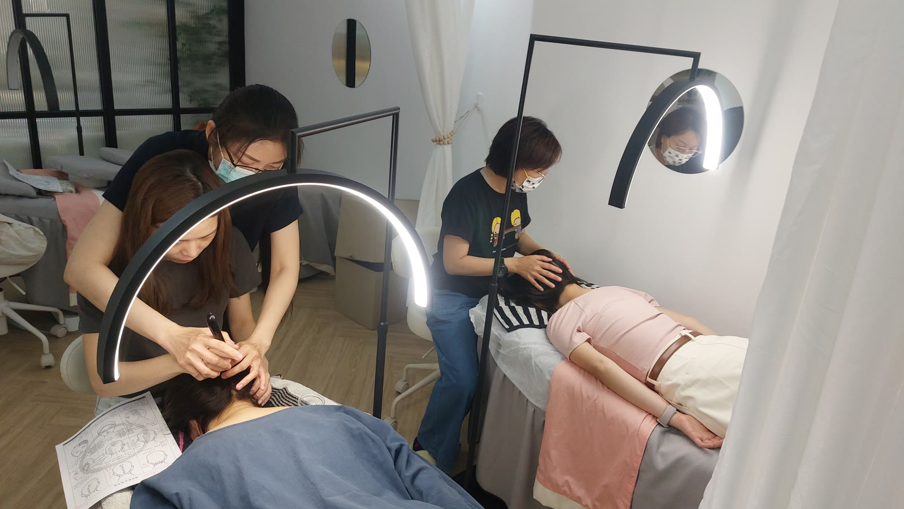
How fast should you move?
Pressure and angle get the questions; speed almost never does. When a slow, deliberate pass works better than a quick one, and when it's the other way around.

How many times should you work one spot?
More passes isn't automatically better. The three-to-five rule, why extra reps on a stubborn spot backfire, and what to do instead.
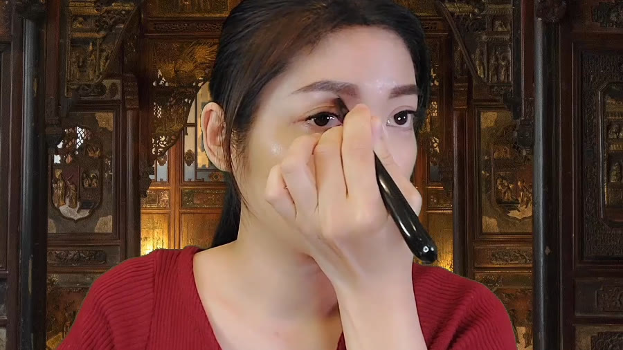
How to hold the handle
The grip behind a steady stroke. The relaxed hold that keeps a stroke steady instead of stiff, and why the other end of the tool matters too.
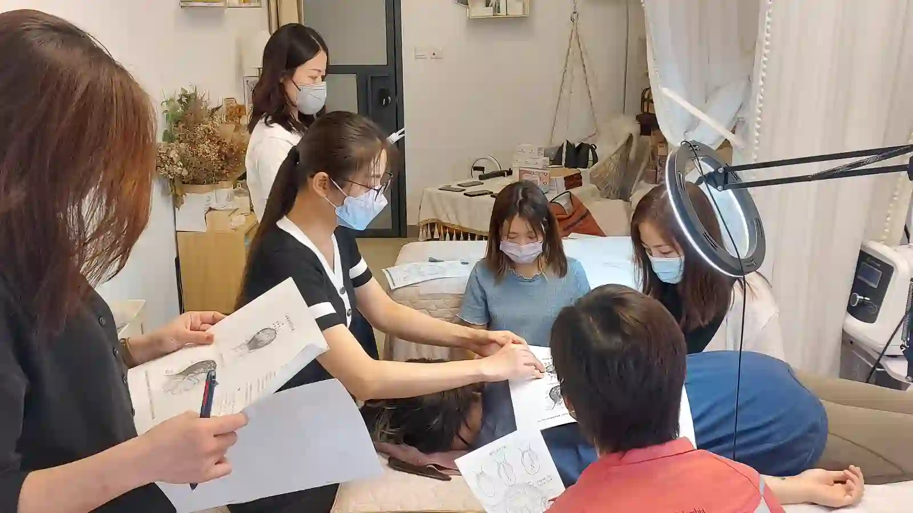
Peach fuzz, facial hair, and dermaplaning
Does bojin change anything? Why a tool doesn't make hair grow back coarser, and how long to wait after dermaplaning.
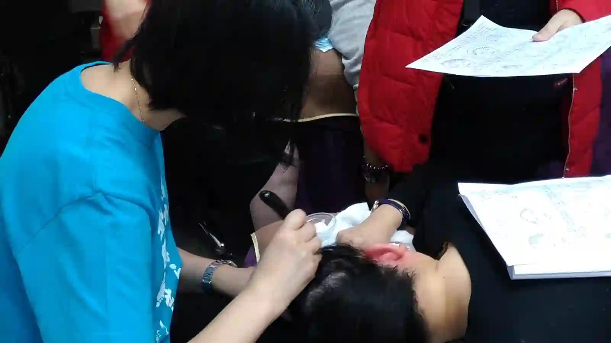
Your ears and earlobes: the zone almost everyone skips
The tender spot in front of and behind your ears holds more than you'd think, plus an honest answer about stretched earlobes.
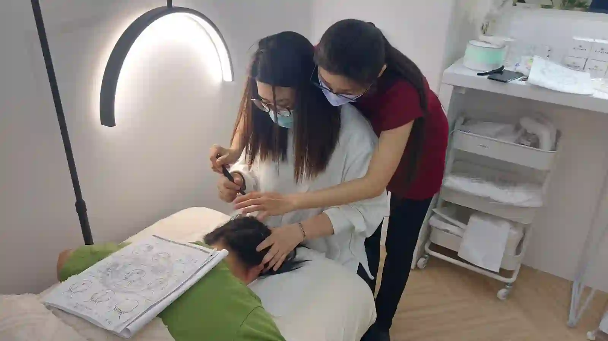
Where forehead tightness actually starts
Your scalp and hairline, and why forehead work alone fades within the hour. How to bring the method past the hairline.
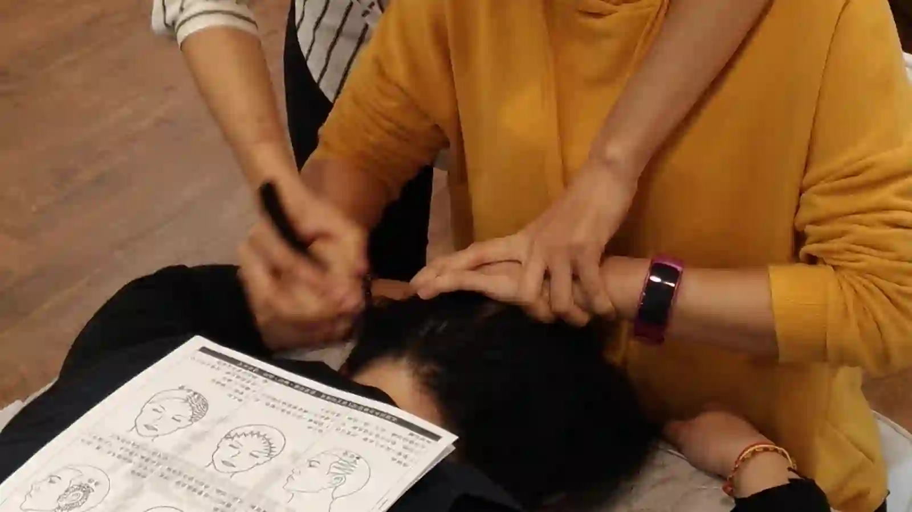
A dimpled, pebbly chin?
The small muscle behind that orange-peel texture, and gentle, precise work for the resting state rather than the expression.
After dental work, implants, or a root canal
How long to wait before restarting your routine, why waiting is the whole answer, and the question to ask your dentist.
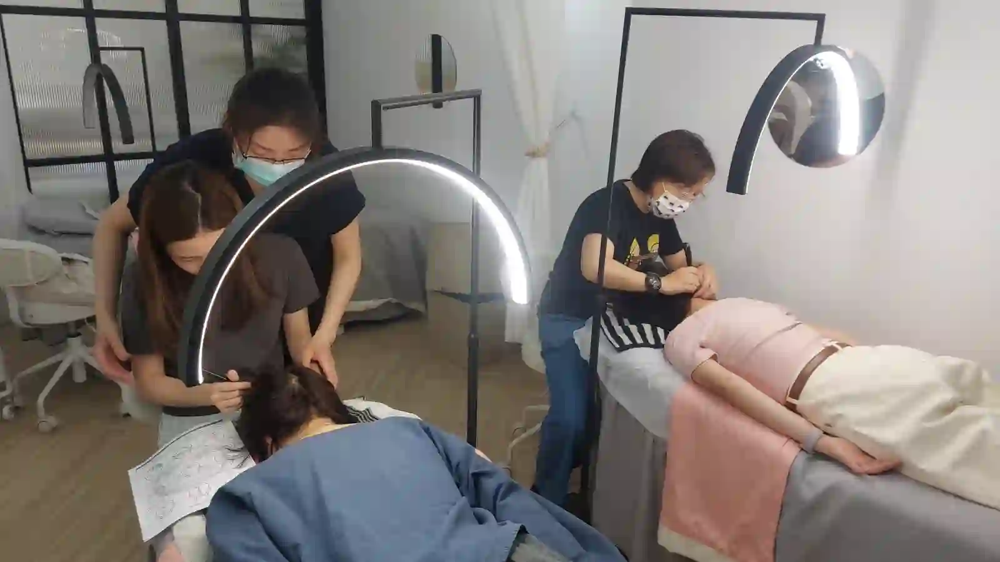
Hot flashes and a flushed face
Should you work on it? What bojin genuinely cannot change, and the tension flashes leave behind that it actually can ease.
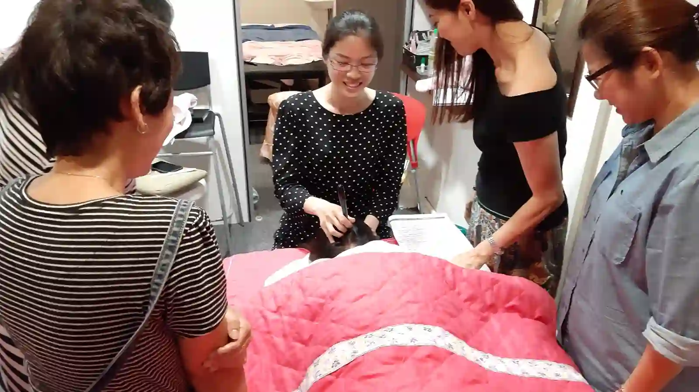
Lost weight and your face looks hollow?
An honest answer about what bojin genuinely cannot restore, and the narrower, real thing it can offer instead.
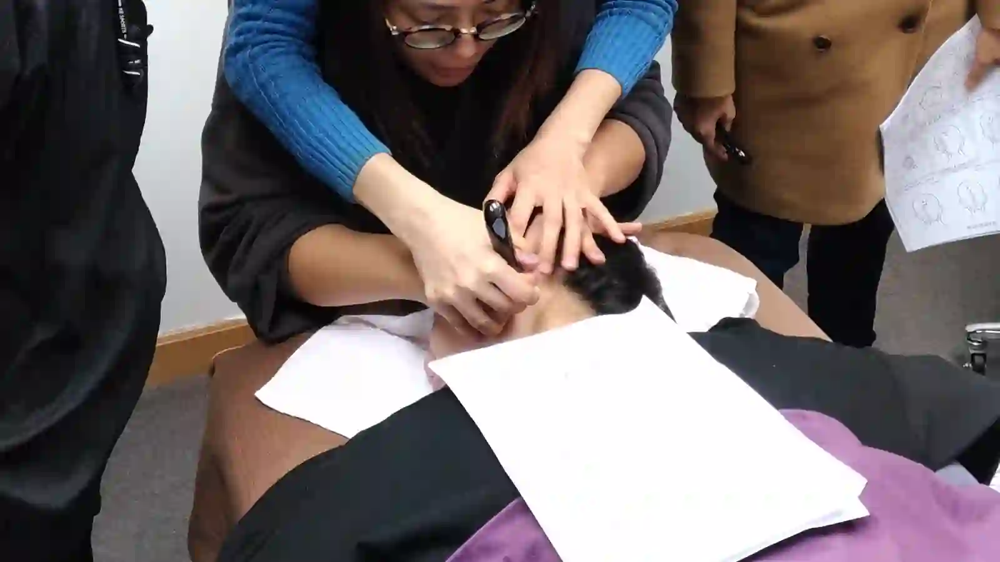
Doing bojin on someone else
What changes when you can't feel the pressure yourself, and how to find it safely on someone you love.
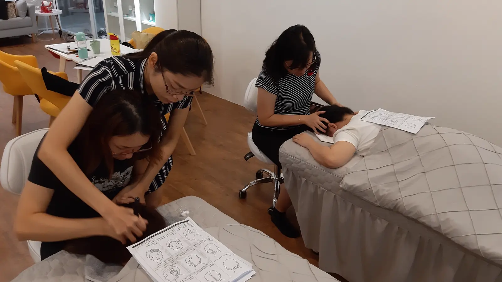
Does your routine need to change with the seasons?
Winter skin behaves differently than summer skin. The one real adjustment worth making each season, and the two things that don't need to change at all.
No guides match that yet — try another word or tap “All”.
Why women keep practicing
A few honest words from students who’ve learned with Yu-Ting.
She’s so dedicated and holds nothing back — she shares everything with us. Next time I’d love to come back for the body course too. — Judy C., Taiwan
I took the head-and-face course with no experience at all, and Yu-Ting’s patient, detailed teaching made it easy to pick up. A wonderful class. — Mercy W., Taiwan
Individual experiences vary. This is gentle self-care, not medical treatment.
Not sure where to start?
Let your face point the way.
Answer five quick questions and we'll match you to the right 5-minute ritual — plus a free personalized starter guide. Takes about a minute.
Free starter guide
Give your face ten quiet minutes.
Leave your email and the free guide — the condensed first lesson of the method — is ready to open in seconds. New journal entries follow, only when there's something worth sharing.
No spam, ever. Unsubscribe in one click. This is self-care, not medical treatment.